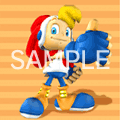
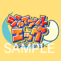
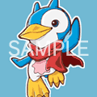
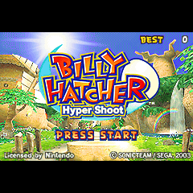
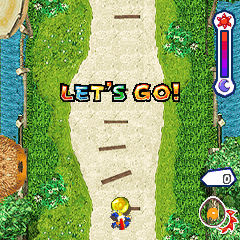
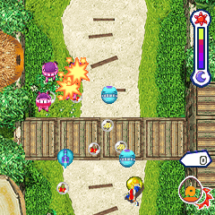
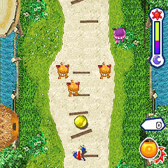
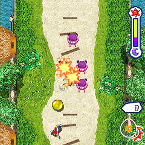

|
■
GCからGBAにダウンロードして遊べるミニゲームがi アプリに移植！■
タマゴを転がし敵を倒せ！ GC『ジャイアントエッグ』からGBAにダウンロードできるミニゲームのi アプリ版です｡ |
||
|
| ｉ アプリ | 『ビリー･ハッチャー ハイパーシュート』 | 505,504対応 |
| 待受画像 | タイトルロゴ １種 キャラクター １６種（有料会員のみ） |
505,504,503対応 |
| 着信メロディー | メインテーマ「CHANT THIS CHARM」 | 505,504,503対応 |
| メール着信音 | コケコッコー/Cook-a-doodle-doo | 505,504対応 |
| フレーム画像 | ジャイアントエッグフレーム | 505i,504iS対応 |
 |
 |
 |
|
<<
ゲームの説明 >>
|
| ■ どんなゲーム？ |
|
 |
タマゴを転がし敵を倒していくゲームです｡ |
| ■ 操作方法 |
|
 |
【左右 キー】 横移動 【決定 キー】 タマゴを投げる（エッグシュート） 投げたタマゴはバックスピンで戻ってきます。 うまくキャッチしましょう。 |
| ■ 連鎖 |
|  |
投げたタマゴを敵に命中させると、敵はエサを落として転がり始めます｡ |
| ■ ステージクリア |
|

|
エサにタマゴが触れると、画面右下のタマゴゲージが増えます。ゲージが一杯になると金のタマゴに封印された長老を助けることができ、ステージクリアとなります｡ |
| ■ ゲームオーバー |
|  |
画面右上のバーは制限時間を示しています｡ |
<<戻る>>
© SEGA